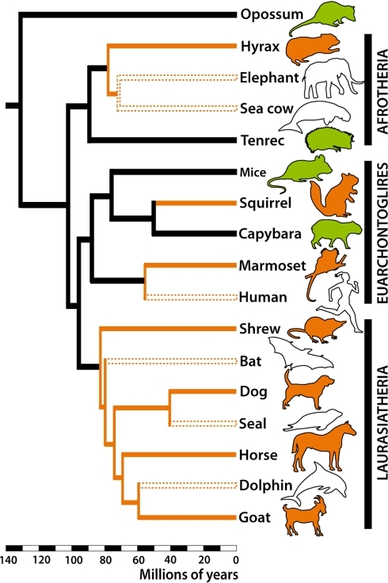
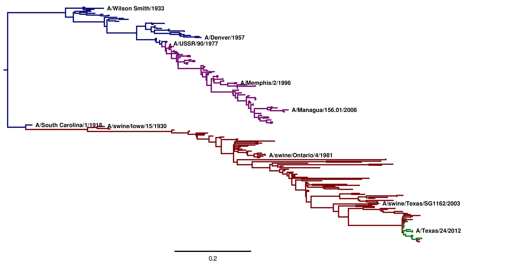
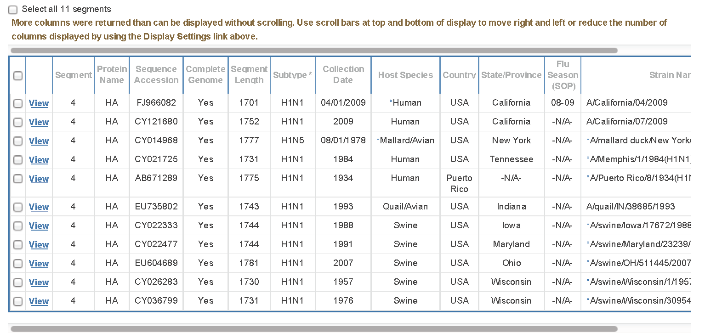

Using phylogenetics to understand a virus pandemic
These slides are available at http://jbloom.github.io/FluPhylogeneticsModule/slides.html
Advance through the slides using the arrow keys.
These slides are for the high-school level class, and were created by Jesse Bloom, Trevor Bedford, and Greg Ballog.
A new flu virus appears in the U.S.
On April 15, 2009, doctors in California detect a new strain of influenza in a 10-year old child. A few days later, a similar virus is found in another child in California.
A new flu virus appears in the U.S.
A week later, the Centers for Disease Control (CDC) publishes an article in Morbidity and Mortality Weekly Report describing these infections:
On April 17, 2009, CDC determined that two cases of febrile respiratory illness occurring in children who resided in adjacent counties in southern California were caused by infection with a swine influenza A (H1N1) virus. The viruses from the two cases are closely related genetically... and contain a unique combination of gene segments that previously has not been reported among swine or human influenza viruses in the United States or elsewhere. Neither child had contact with pigs; the source of the infection is unknown.
The virus spreads in the U.S.
On April 23, 2009, it is discovered that the virus has also infected people in Texas, as described in this New York Times article.
The virus is also in Mexico
It quickly becomes apparent that the virus is already circulating fairly extensively in Mexico, as described in this New York Times article.

The U.S. declares a public health emergency
A few days later, the U.S. declares a health emergency, as described in this New York Times article.

The World Health Organization (WHO) declares a pandemic
Within six weeks, the virus has spread to at least 74 countries. The WHO issues a declaration that the virus is a pandemic, as reported in
this New York Times article.
Your goal
You will use techniques from computational biology to address two questions that scientists needed to answer when faced with this infection:
- Is the virus resistant to the drug Tamiflu?
- Where did the virus come from?
Some background on flu pandemics
"Flu" is the common name for influenza, which is a virus that infects many species including birds, pigs, horses, humans, and dogs.
Watch this video for some background on influenza pandemics.
Back to your goal
You will use techniques from computational biology to address two questions that scientists needed to answer when faced with this infection:
- Is the virus resistant to the drug Tamiflu?
- Where did the virus come from?
Is the virus resistant to Tamiflu?
One of the first questions scientists asked was whether the virus was resistant to Tamiflu (also known by the chemical name oseltamivir), which is the most commonly used drug against influenza.

Is the virus resistant to Tamiflu?
Earlier studies had shown that influenza of this type was resistant if it had a mutation of from His to Tyr at position 275 of the virus's neuraminidase protein (this mutation is called His275Tyr).
So did the new 2009 pandemic virus have the His275Tyr mutation? To answer this question, we need to learn a little bit about influenza's genes.
Background on influenza's genes
Influenza is an RNA virus that encodes its genes in the negative sense. This means that its genes are made of RNA (rather than the DNA used to make our genes) that needs to be copied into mRNA (positive sense) before it can be translated into protein:
viral RNA -> mRNA -> protein
Using this knowledge, we will look at the neuraminidase gene for the strain A/California/07/2009 to see if it contains the Tamiflu-resistance mutation His275Tyr.
Is the virus resistant to Tamiflu?
Use the portion of the sequence below for neuraminidase to see whether virus A/California/07/2009 has His275 (Tamiflu will work) or the resistance mutation His275Tyr (Tamiflu will not work). To go from viral RNA to mRNA, using the base-pair rules (A - U and C - G). To go from mRNA to protein, use the genetic code:
viral RNA: 3'-... cgg gga uua aua gug aua cuc cuu acg agg ...-5'
mRNA: 5'-... gcc ccu ??? ??? ??? ??? ??? ??? ??? ??? ...-3'
protein: ... Ala ??? ??? ??? ??? ??? ??? ??? ??? ??? ...
number: ... 271 272 273 274 275 276 277 278 279 280 ...
Exercise 1: Is this virus resistant to Tamiflu? If yes, what is a single-nucleotide mutation that would make it non-resistant? If no, what is a single-nucleotide mutation that would make it resistant?
Where did the virus come from?
To answer this question, we will use phylogenetics.
A phylogenetic tree represents evolutionary histories.
Phylogenetic trees
Geneology of the royal family.

Phylogenetic trees
Haeckel's tree of life (1879).
Phylogenetic trees
Tree of eutherian mammals from this paper.

Phylogenetic trees
Tree of influenza viruses taken from here.

Using phylogenetics to determine the origin of the 2009 pandemic
You will build a phylogenetic tree to determine the origins of the 2009 pandemic virus.
You will do this using the Influenza Research Database.
Register with the Influenza Research Database
- Go to the webpage for the Influenza Research Database.
- Click on the button on the upper right that says Sign Up! to create an account (or if you already created an account, click Sign In).
- You are now officially registered with the Influenza Research Database!
Assemble a set of virus sequences
After signing in, go to the homepage of the Influenza Research Database.
Click on the option under Search that says Sequences & Strains.
Click on the ADVANCED OPTIONS button at lower left.
Select the option that says Keyword search.
In the box on the right that says in All, change this to in Unique Sample Identifier.
Enter the following list identifiers (separated by commas) in the empty white search box:
FJ966082, CY121680, EU604689, CY022477, CY022333, CY036799,
CY026283, CY021725, AB671289, CY014968, EU735802
Saving your sequence set
- You should now have a set of sequences that like this:

- Click on Select all 11 segments, and then click Add to Working Set and save them as flu sequences. You have now saved the sequences on your workbench.
Examining your sequence set
Click on the Workbench button at the top of the Influenza Research Database.
On the list of analyses, click on View next to the flu sequences sequence set that you saved.
Look at the names. Flu sequences from humans are named like this:
A/Location/Number/Date (such as A/California/04/2009)
while sequences from other species are named like this:
A/Species/Location/Number/Date (such as A/swine/Iowa/17672/1988)
Examine your sequence set
We will now look at the composition of the sequence set that you have saved.
Exercise 2: How many of the sequences come from humans? How many from pigs? How many from birds? What is the date of the earliest sequence?
Download your sequences
Click to Select all 11 segments. Then click on the Download button near the top of the page to download the sequence set. Select the Gene FASTA format. Then click on the option to custom format the the Definition Line and add only Strain Name (this ensure the sequences are named by strain). Then click Download and save the file GeneFastaResults.fasta.
This downloaded file has all of the sequences along with the strain name in FASTA format.
Shortcut: If you have problems with these steps, you can Download the file by clicking here.
Hypothesize about the phylogenetic tree
In your sequence set, there are two sequences from the 2009 outbreak in California. These sequences are A/California/04/2009 and A/California/07/2009.
The rest of the sequences are from pigs, from birds, or from another earlier strain of flu that was already infecting humans.
Exercise 3: Based on the news articles we discussed earlier, make a hypothesis about the phylogenetic tree. To which sequence(s) do you think the 2009 sequences from California will be most closely related?
Build the phylogenetic tree
- Go to the ClustalW webpage.
- At STEP 1, click the option that says Choose File and upload the sequence set GeneFastaResults.fasta that you downloaded from the Influenza Research Database.
- We are using gene sequences, so where it says a set of Protein sequences change Protein to DNA.
- Then click the Submit button at the bottom of the page. Wait for the analysis to finish. You may have to hit Reload on your web browser after waiting a few minutes.
Visualizing your tree
- Once you get the results page, click the option for Phylogenetic Tree at the top of the page.
- Scroll to the bottom of the page to look at the tree.
- After looking at this tree, answer the questions on the next page.
Examining the tree
Exercise 4: Answer the following questions:
- The two pandemic sequences are A/California/04/2009 and A/California/07/2009. Are these sequences more closely related to each other than other sequences?
- Are the pandemic sequences most closely related to swine, human, or bird sequences?
- What is the date of the sequences to which the pandemic sequences are most closely related.
- Interpret these results in terms of the origins of the pandemic.
If you're interested in learning more...
The exercises that you have just performed are a simpler version of the studies that scientists actually performed to understand the 2009 swine-origin H1N1 influenza pandemic.
If you are interested, you can read about the similar but more complex analyses that scientists actually performed to study this virus outbreak by looking at this paper.